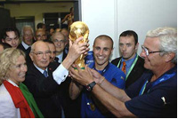

Футбол
Футбол, который также часто называют футболом за пределами Великобритании и ассоциативным футболом по всей Европе, представляет собой игру двух команд и одного мяча — футбола. В каждой команде 11 игроков, и, используя все части своего тела, кроме рук и кистей, они должны попытаться забить мяч в ворота другой команды. Цель, как правило, представляет собой большую прямоугольную раму с сеткой, прикрепленной к задней части. Однако в любительских играх часто используются только маркеры, такие как дорожные конусы или, если вы подросток, свитера или сумки. Когда это не профессиональный футбол, условиями, часто расслабляются.
Задача вратаря не дать мячу попасть в сетку. В каждой команде есть вратарь, который в виде исключения может руками блокировать мяч. Правда, делать это им разрешено только в штрафной площади – небольшой площадке перед воротами и вокруг них. В футболе побеждает та команда, которая забьет больше голов к концу игры. Стандартная продолжительность игры составляет 90 минут с коротким перерывом, известным как «перерыв», на отметке 45 минут. Однако юношеские футбольные матчи часто короче – обычно они длятся всего 45-60 минут. В футболе побеждает та команда, которая забьет больше голов к концу игры. Стандартная продолжительность игры составляет 90 минут с коротким перерывом, известным как «перерыв», на отметке 45 минут. Однако юношеские футбольные матчи часто короче – обычно они длятся всего 45-60 минут. В футболе побеждает та команда, которая забьет больше голов к концу игры. Стандартная продолжительность игры составляет 90 минут с коротким перерывом, известным как «перерыв», на отметке 45 минут. Однако юношеские футбольные матчи часто короче – обычно они длятся всего 45-60 минут.